stack_layout() arranges plots either horizontally or
vertically, and can be referred to using the alias
ggstack(). There are two types of stack layouts:
-
stack_align(): align the observations along the stack. -
stack_free(): don’t align the observations.
Several aliases are available for convenience:
-
stack_alignv: Aligns the stack vertically (special case ofstack_align()). -
stack_alignh: Aligns the stack horizontally (special case ofstack_align()). -
stack_freev: A vertical version ofstack_free(). -
stack_freeh: A horizontal version ofstack_free().direction = "horizontal".
Input data
- For
stack_free(), a data frame is required, and the input will be automatically converted usingfortify_data_frame()if needed. - For
stack_align(), a matrix is required, and the input will be automatically converted usingfortify_matrix()if needed.
set.seed(123)
small_mat <- matrix(rnorm(56), nrow = 7)
rownames(small_mat) <- paste0("row", seq_len(nrow(small_mat)))
colnames(small_mat) <- paste0("column", seq_len(ncol(small_mat)))By default, stack_align()/stack_free() will
set up the layout, but no plot will be drawn until you add a plot
element:
stack_alignh(small_mat)
# stack_freev(small_mat) # the same for `stack_free()`plot element
For stack_align(), plots can be added regardless of
whether they need to align observations.
stack_alignh(small_mat) + align_dendro()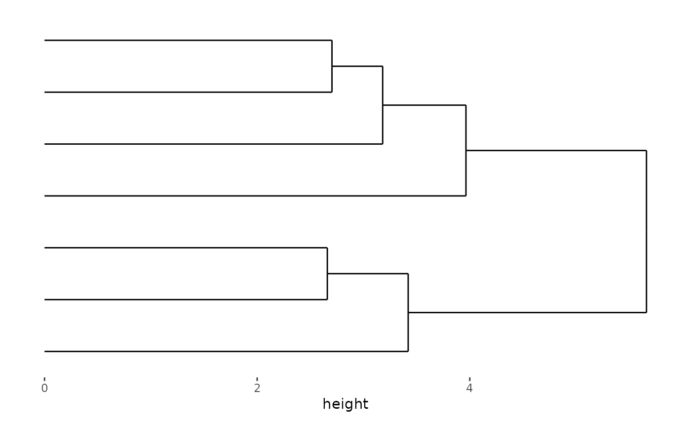
stack_alignh(small_mat) +
align_kmeans(centers = 3L) +
ggalign(data = rowSums) +
geom_bar(aes(value, fill = .panel), orientation = "y", stat = "identity") +
facet_grid(switch = "y") +
theme(strip.text = element_text()) +
align_dendro(aes(color = branch))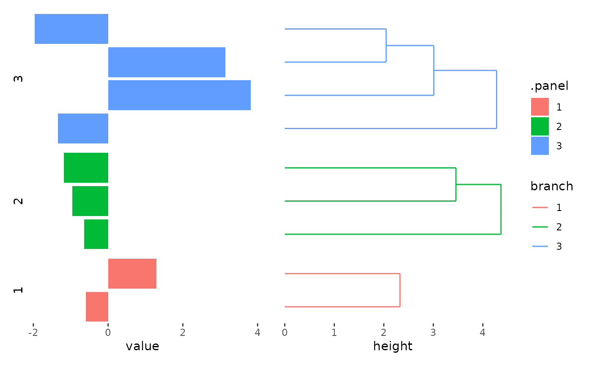
We can stack the plots vertically with
stack_alignv():
stack_alignv(small_mat) + align_dendro()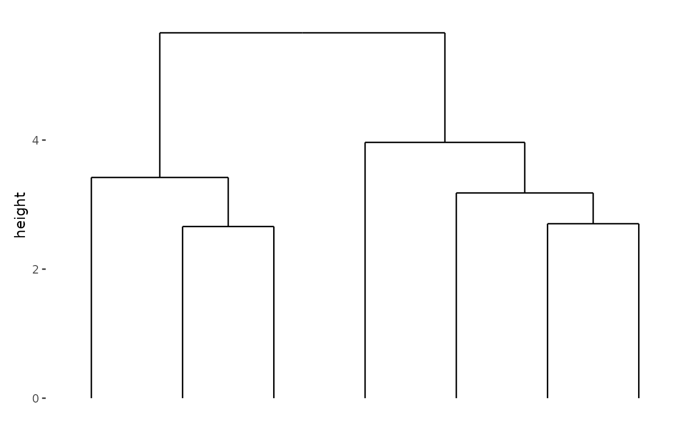
Note that vertical stack take the
x-axisas the observations, but horizontal stack take they-axisas the observations.
stack_align() can add plot without alignment of
observations.
stack_alignv() +
ggfree(aes(displ, hwy, colour = class), data = mpg) +
geom_point(size = 2) +
ggfree(aes(displ, hwy, colour = class), data = mpg) +
geom_point(size = 2) &
scale_color_brewer(palette = "Dark2") &
theme_bw()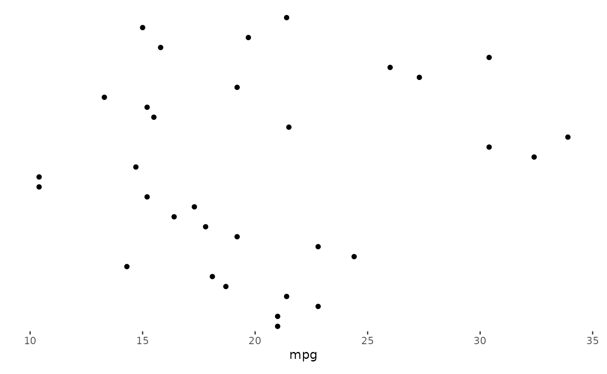
For stack_free(), only plots that are free from
alignment (ggfree()) can be added along the axis.
stack_free() alone is not very useful, since we can combine
multiple plots vertically or horizontally with
align_plots() or patchwork. The
only benefits would be the data can be inherited by multiple plots.
stack_freev(mpg) +
ggfree(aes(displ, hwy, colour = class)) +
geom_point(size = 2) +
ggfree(aes(displ, hwy, colour = class)) +
geom_point(size = 2) &
scale_color_brewer(palette = "Dark2") &
theme_bw()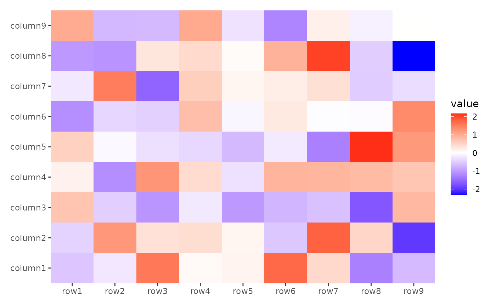
ggheatmap()/quad_layout()
ggheatmap()/quad_layout() can be added to a
stack layout.
stack_alignh(small_mat) +
ggheatmap()
#> → heatmap built with `geom_tile()`However, as noted earlier, stack_free() can only accept
plots that are free from alignment along the axis. Here’s a table
summarizing which layouts are compatible with
stack_free():
stack_freeh() |
stack_freev() |
|
|---|---|---|
quad_free()/ggside()
|
✅ | ✅ |
quad_alignh() |
❌ | ✅ |
quad_alignv() |
✅ | ❌ |
quad_alignb()/ggheatmap()
|
❌ | ❌ |
alignh_quad_plot <- quad_alignh(small_mat) +
geom_boxplot(aes(value, .row_names, fill = .row_names)) +
scale_fill_brewer(palette = "Dark2")
stack_freev() +
alignh_quad_plot +
alignh_quad_plot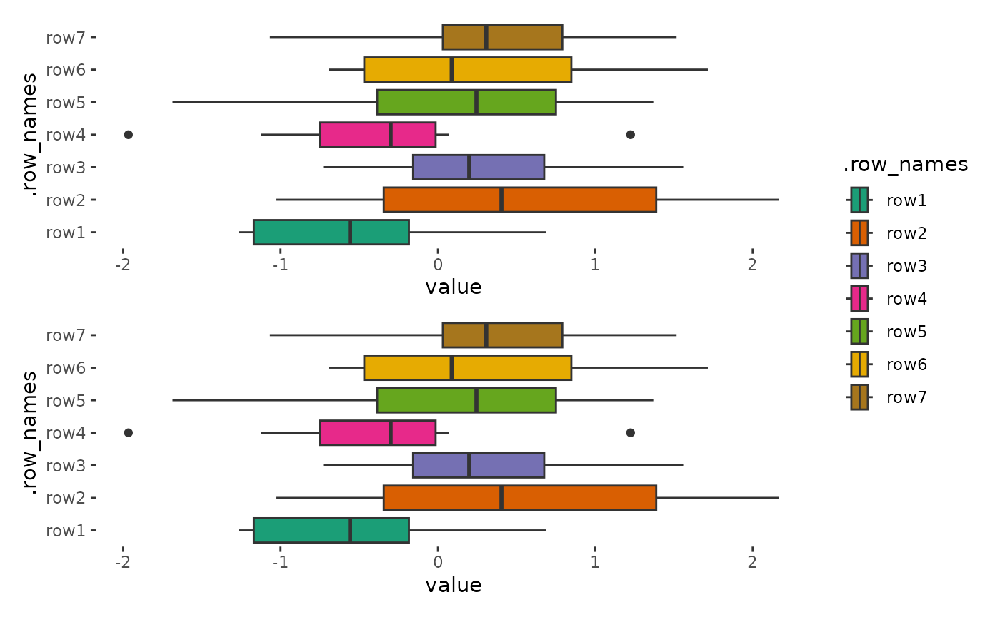
The data of ggheatmap()/quad_layout() can
inherit from the parent stack_layout(), but the data format must match.
Otherwise, you will need to manually provide the data. When
ggheatmap()/quad_layout() is added to a
vertical stack_align(), the inherited matrix is transposed before
use.
stack_alignv(small_mat) +
ggheatmap()
#> → heatmap built with `geom_tile()`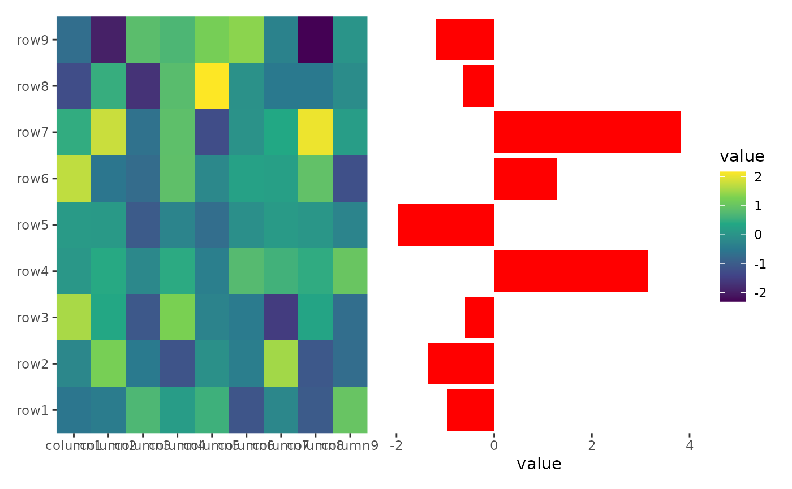
Once a ggheatmap()/quad_layout() is added,
any further elements you add will be applied to this
ggheatmap()/quad_layout(). You can include
align_* elements or any ggplot2 components for the
quad_layout().
stack_alignh(small_mat) +
ggheatmap() +
scale_fill_viridis_c()
#> → heatmap built with `geom_tile()`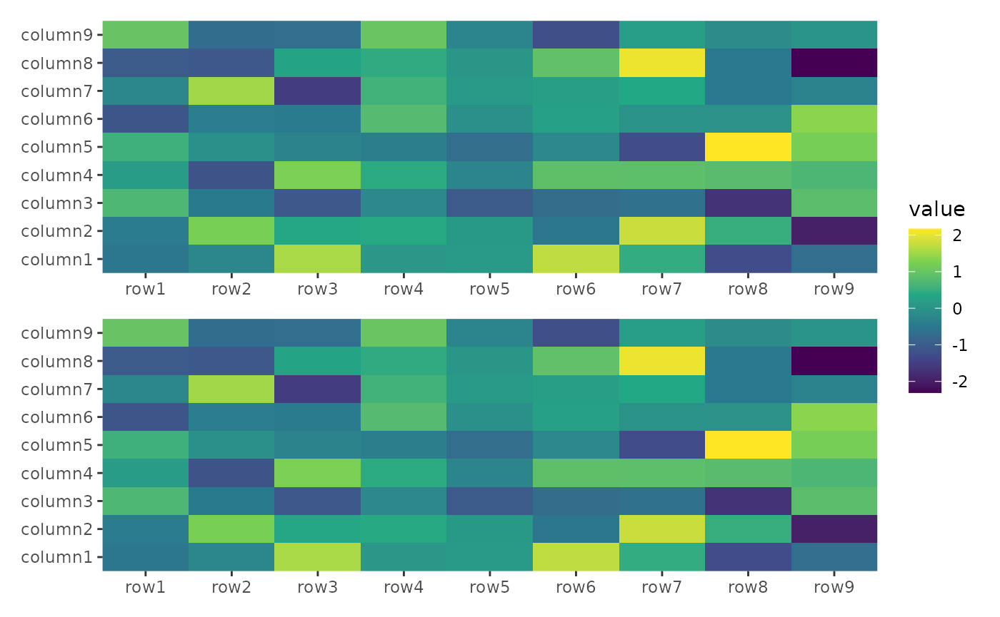
If you’d like to add elements to the stack layout rather than the
ggheatmap()/quad_layout() layout, you can
easily switch from the
ggheatmap()/quad_layout() to the stack layout
using stack_active().
stack_alignh(small_mat) +
ggheatmap() +
scale_fill_viridis_c() +
theme(axis.text.x = element_text(angle = -60, hjust = 0)) +
stack_active() +
ggalign(data = rowSums) +
geom_bar(aes(value), fill = "red", orientation = "y", stat = "identity")
#> → heatmap built with `geom_tile()`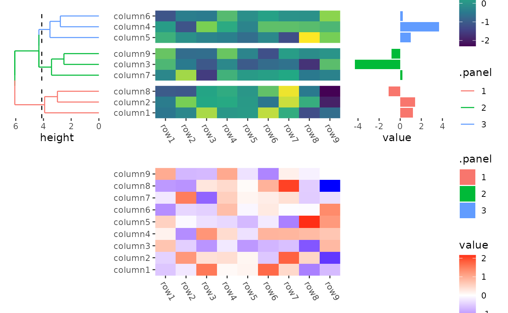
One exception is the
ggheatmap()/quad_layout() itself, which cannot
be added to another heatmap layout. Therefore, you can directly add a
ggheatmap()/quad_layout() to the stack layout
without using stack_active().
stack_alignv(small_mat) +
ggheatmap() +
ggheatmap() &
scale_fill_viridis_c()
#> → heatmap built with `geom_tile()`
#> → heatmap built with `geom_tile()`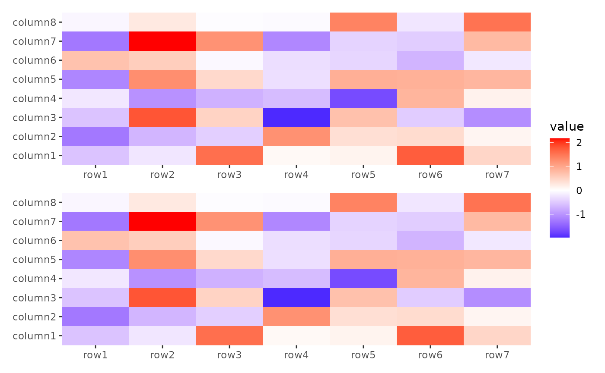
Control sizes
A length of 3 sizes should be provided in
stack_align()/stack_free() when putting a
heatmap with flank annotation into the stack layout. For vertical
stacks, this means heatmaps with left or right annotations; for
horizontal stacks, this means heatmaps with top or bottom annotations.
The first size controls the relative
width/height of the left or top annotation,
the second controls the relative size of the heatmap body
width/height, and the third controls the
relative width/height of the right or bottom
annotation.
By default the three rows/columns will have equal sizes.
stack_alignv(small_mat) +
ggheatmap() +
scale_fill_viridis_c() +
theme(axis.text.x = element_text(angle = -60, hjust = 0)) +
anno_left() +
align_dendro(aes(color = .panel), k = 3L) +
anno_right() +
ggalign(data = rowSums) +
geom_bar(aes(value, fill = .panel), orientation = "y", stat = "identity") +
ggheatmap() +
theme(axis.text.x = element_text(angle = -60, hjust = 0))
#> → heatmap built with `geom_tile()`
#> → heatmap built with `geom_tile()`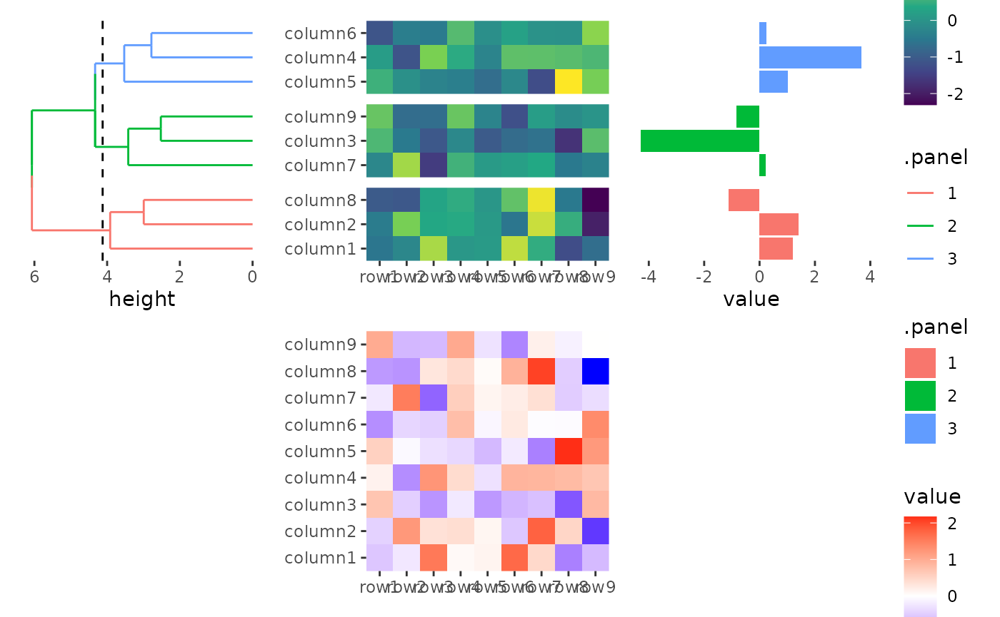
# the left annotation, will have a relative size 1
# the heatmap body will have a relative width 2
# the right annotation will have a relative size 1
stack_alignv(small_mat, sizes = c(1, 2, 1)) +
ggheatmap() +
scale_fill_viridis_c() +
theme(axis.text.x = element_text(angle = -60, hjust = 0)) +
anno_left() +
align_dendro(aes(color = .panel), k = 3L) +
anno_right() +
ggalign(data = rowSums) +
geom_bar(aes(value, fill = .panel), orientation = "y", stat = "identity") +
ggheatmap() +
theme(axis.text.x = element_text(angle = -60, hjust = 0))
#> → heatmap built with `geom_tile()`
#> → heatmap built with `geom_tile()`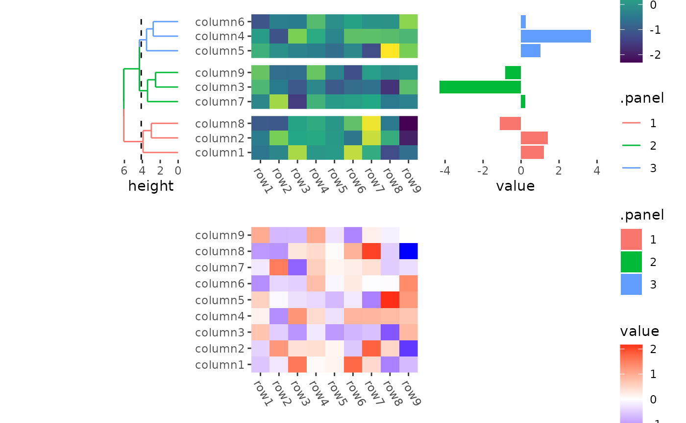
In this way, heatmap body width/height specified in
quad_active() or ggheatmap() won’t work.
stack_alignv(small_mat) +
ggheatmap(width = unit(2, "null")) + # not work
scale_fill_viridis_c() +
theme(axis.text.x = element_text(angle = -60, hjust = 0)) +
anno_left() +
align_dendro(aes(color = .panel), k = 3L) +
anno_right() +
ggalign(data = rowSums) +
geom_bar(aes(value, fill = .panel), orientation = "y", stat = "identity") +
ggheatmap(width = unit(2, "null")) + # not work
theme(axis.text.x = element_text(angle = -60, hjust = 0))
#> → heatmap built with `geom_tile()`
#> → heatmap built with `geom_tile()`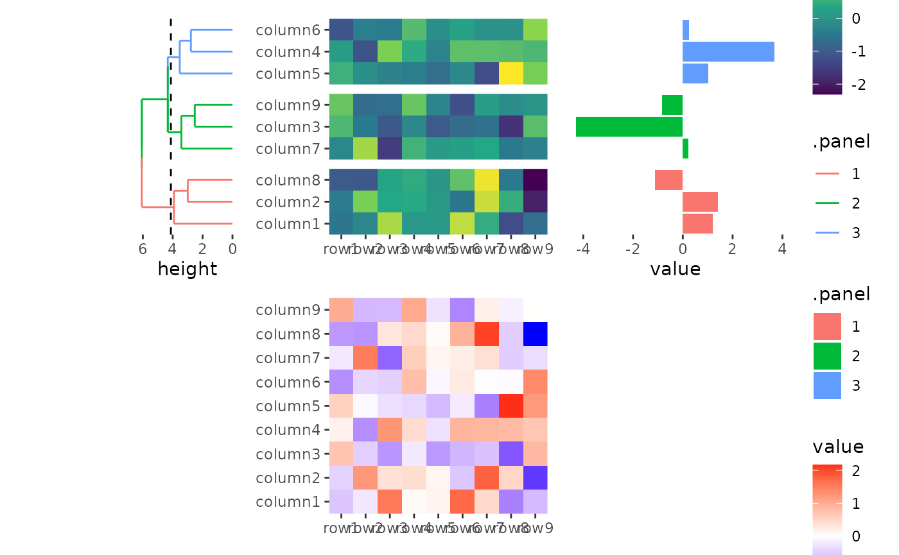
By default the flank annotation will fill the whole stack flank, but
we can still control the size of heatmap annotation in
quad_anno().
stack_alignv(small_mat) +
ggheatmap() +
scale_fill_viridis_c() +
theme(axis.text.x = element_text(angle = -60, hjust = 0)) +
# the left annotation will have a total size 2cm
anno_left(size = unit(2, "cm")) +
align_dendro(aes(color = .panel), k = 3L) +
anno_right() +
ggalign(data = rowSums) +
geom_bar(aes(value, fill = .panel), orientation = "y", stat = "identity") +
ggheatmap() +
theme(axis.text.x = element_text(angle = -60, hjust = 0))
#> → heatmap built with `geom_tile()`
#> → heatmap built with `geom_tile()`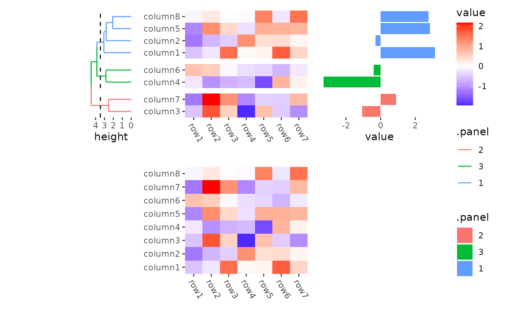
You can also use npc unit.
stack_alignv(small_mat) +
ggheatmap() +
scale_fill_viridis_c() +
theme(axis.text.x = element_text(angle = -60, hjust = 0)) +
# the left annotation will have a total width 1/2 npc
anno_left(size = unit(0.5, "npc")) +
align_dendro(aes(color = .panel), k = 3L) +
anno_right() +
ggalign(data = rowSums) +
geom_bar(aes(value, fill = .panel), orientation = "y", stat = "identity") +
ggheatmap() +
theme(axis.text.x = element_text(angle = -60, hjust = 0))
#> → heatmap built with `geom_tile()`
#> → heatmap built with `geom_tile()`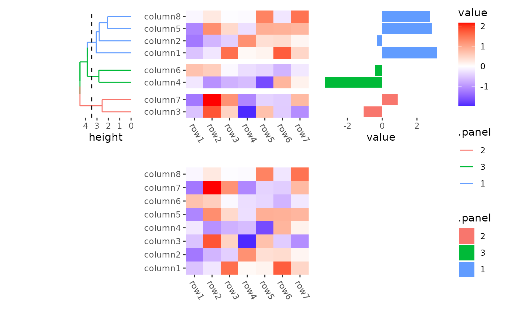
Session information
sessionInfo()
#> R version 4.4.2 (2024-10-31)
#> Platform: x86_64-pc-linux-gnu
#> Running under: Ubuntu 22.04.5 LTS
#>
#> Matrix products: default
#> BLAS: /usr/lib/x86_64-linux-gnu/openblas-pthread/libblas.so.3
#> LAPACK: /usr/lib/x86_64-linux-gnu/openblas-pthread/libopenblasp-r0.3.20.so; LAPACK version 3.10.0
#>
#> locale:
#> [1] LC_CTYPE=C.UTF-8 LC_NUMERIC=C LC_TIME=C.UTF-8
#> [4] LC_COLLATE=C.UTF-8 LC_MONETARY=C.UTF-8 LC_MESSAGES=C.UTF-8
#> [7] LC_PAPER=C.UTF-8 LC_NAME=C LC_ADDRESS=C
#> [10] LC_TELEPHONE=C LC_MEASUREMENT=C.UTF-8 LC_IDENTIFICATION=C
#>
#> time zone: UTC
#> tzcode source: system (glibc)
#>
#> attached base packages:
#> [1] stats graphics grDevices utils datasets methods base
#>
#> other attached packages:
#> [1] ggalign_0.0.4.9000 ggplot2_3.5.1
#>
#> loaded via a namespace (and not attached):
#> [1] vctrs_0.6.5 cli_3.6.3 knitr_1.49 rlang_1.1.4
#> [5] xfun_0.49 textshaping_0.4.0 jsonlite_1.8.9 labeling_0.4.3
#> [9] glue_1.8.0 colorspace_2.1-1 htmltools_0.5.8.1 ragg_1.3.3
#> [13] sass_0.4.9 fansi_1.0.6 scales_1.3.0 rmarkdown_2.29
#> [17] grid_4.4.2 tibble_3.2.1 evaluate_1.0.1 munsell_0.5.1
#> [21] jquerylib_0.1.4 fastmap_1.2.0 yaml_2.3.10 lifecycle_1.0.4
#> [25] compiler_4.4.2 RColorBrewer_1.1-3 fs_1.6.5 pkgconfig_2.0.3
#> [29] farver_2.1.2 systemfonts_1.1.0 digest_0.6.37 viridisLite_0.4.2
#> [33] R6_2.5.1 utf8_1.2.4 pillar_1.9.0 magrittr_2.0.3
#> [37] bslib_0.8.0 withr_3.0.2 tools_4.4.2 gtable_0.3.6
#> [41] pkgdown_2.1.1 cachem_1.1.0 desc_1.4.3